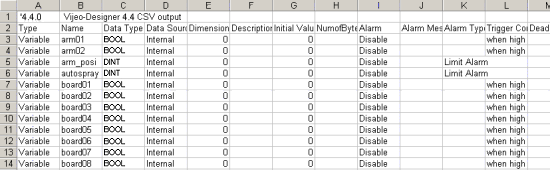

|
|
|
|
|
|
|
|
You can open exported variable .csv and .txt files in spreadsheet applications (such as Microsoft Excel) or text editors (such as Notepad), then edit variable properties or even add variables.
The example below represents only part of a .csv file, as viewed in Excel.
The first row displays the Vijeo Designer version used to export the .csv file.
The second row displays the variable property names.
From the third row on, each row displays a variable and its properties.

Not all variable properties can be edited in the .csv or .txt file. If a property is not listed in the following table, then it cannot be export and imported.
|
Property |
Description |
|
Type |
Enter any of the following variable types:
|
|
Name |
Attach a name to every variable, for example, Arm0. For array variables, the name is specified by an array variable name and an element number, for example, Board[0]. For folders and structures, the folder or structure name and the name of the variable contained within it are specified, for example, Machine.pv. |
|
Data Type |
Enter any of the following data types:
|
|
Data Source |
Specify Internal or External for the Data Source. |
|
Dimension |
For arrays and block variables, enter the number of elements (1 to 2048). For arrays, this column is associated with the ArrayDimension property. For blocks, the column is associated with the Block Elements property. |
|
Description |
Enter a description of the variable. You can enter a maximum of 256 characters. If the variable is being edited in a text editor, insert double quotes before and after the text to show that it is a String. |
|
Initial Value |
If Data Source is set to Internal, define an initial value. You do not need to define initial values if Data Source is set to External. When editing the initial value of String data in a text editor, use quotation marks (" ") around the initial value to identify it as a String. For example: "See Spot run said Jane" When using quotations within a string, use double quotations to identify the quotations in the string as characters. For example, the following string requires double quotations: "See Spot run" said Jane => """See Spot run""said Jane" |
|
NumOfBytes |
This field is available when Data Type is set to STRING. Specify the length of the string (2 to 100 bytes) stored by the variable. When Data Source is set to External, the defined number of bytes is read from and written to the device.
|
|
Alarm |
Enable or Disable. |
|
Alarm Message |
Variable alarm messages have a maximum of 160 characters. When editing in a text editor, use quotation marks (" ") around the alarm message to identify it as a string. For example, "See Spot run said Jane" When using quotations within a string, use double quotations to identify the quotations in the string as characters. For example, the following string requires double quotations: "See Spot run" said Jane => """See Spot run""said Jane" If the target machine is configured for multiple languages, the alarm message displays in the currently active language. Alarm messages from the default language are exported.
|
|
Alarm Type |
This property is available when the Data Type is INT, UINT, DINT, UDINT, Integer or REAL. Select one of the following alarm types:
|
|
Trigger Condition |
This field is available when the Data Type is BOOL. Select one of the following trigger conditions:
|
|
Dead Band |
The Deadband value defines the range between the alarm's trigger point and its deactivation point. When a Limit alarm is activated, a Deadband allows the value to hover at that limit without continuously activating and deactivating the alarm.
|
|
LoLo/Lo/Hi/HiHi |
|
|
Minor |
Enter a value for a minor deviation alarm. A minor deviation alarm is activated if the variable value deviates outside the Minor alarm range. If both measurements of deviation (Minor and Major) have been defined, the Minor alarm will be activated before the Major alarm is triggered. The allowable minor deviation is calculated as: Target ± Minor . |
|
Major |
Enter a value for a major deviation alarm. A major deviation alarm is activated if the variable value deviates outside the Major alarm range. If both measurements of deviation (Minor and Major) have been defined, the Major alarm will be triggered after the Minor alarm is activated. The allowable major deviation is calculated as: Target ± Major. |
|
Alarm Group |
Assigns the alarm group associated with this variable. Select an alarm group if you want the alarm:
Select None if you want to use the alarm just as an alarm indicator using sound. |
|
Severity |
This field assigns priority to the variable's alarms. Enter an integer (1 to 999) in this field, where 1 is the highest priority and 999 is the lowest priority. |
|
Sound File |
Specify the alias of the sound file that plays when the alarm is triggered. |
|
Play Mode |
Vijeo Designer supports two methods for sound files to be played:
|
|
Scan Group |
Assign the variable to a scan group.
|
|
Device Address |
Type a valid device address.
|
|
Bit Number |
Specifies a bit in a word address when delimiters are required between the word address and bit. For example, to specify this address DM0100:15 Device Address = DM0100 Bit Number = 15 |
|
Data Format |
Select the data format: BIN or BCD. |
|
Signed |
Defines whether negative numbers are supported by the device. Select: 2's Complement, MSB, or Unsigned. |
|
Data Length |
Enter 16 bits, 32 bits, or Bit Field. |
|
Logging Group |
Specifies the logging group that the variable belongs to. |
|
Offset Bit No |
When using specific bits in a word address, define which bit to start from. |
|
Bit Width |
When using specific bits in a word address, defines the number of bits (from the Offset Bit No.). |
|
Record Rate |
Define the interval in seconds between each data log. |
|
Input Range |
Available when Data Type is INT, UINT, DINT, UDINT, Integer or REAL. Select Enabled or Disabled. Input Range restricts data written to the variable from the HMI, and it limits animation, script, and any other data inputs from the HMI display. Data write operations by the PLC are not limited by this function. |
|
Min |
Min defines the range of values written to the variable from the HMI. |
|
Max |
Max defines the range of values written to the variable from the HMI. |
|
Data Scaling |
This field is available when Data Type is INT, UINT, DINT, UDINT, Integer or REAL, and Data Source is External. Select Enabled or Disabled. Data Scaling defines a legend that shows how PLC data is converted between the PLC and HMI display. |
|
Raw/Min |
This field defines how PLC data is converted between the equipment and HMI. If data is outside the RawMin ranges, data is converted proportionally. When the Data Type is:
|
|
Raw/Max |
Defines how PLC data is converted between the equipment and HMI. If data is outside the RawMax ranges, data is converted proportionally. When the Data Type is:
|
|
Scaled Min |
This field defines the HMI data range. When the Data Type is:
|
|
Scaled Max |
This field defines the HMI data range. When the Data Type is:
|
|
Retentive |
This field defines whether variable values are retained when a target shuts down. Select Enable or Disable. When importing projects that are older than Vijeo Designer Version 4.4, the Retentive property for the variables are set to Disable. |

If you are using Microsoft Excel to edit an exported *.txt file, we recommend using Excel's Text Import Wizard to import the *.txt file into Excel. By using the Text Import Wizard, you can specify the *.txt file's field delimiter and set how the data is organized in Excel. Be aware that once you Save the edited (*.txt) file in Excel, the *.txt file's field delimiter is replaced with the Tab delimiter. When you import the edited *.txt file back into a project, specify that the *.txt file uses the Tab as a field delimiter.
If you are using a text editor to edit an exported .csv or .txt file, be aware of the following points
You cannot insert spaces between the field delimiters.
Every line is terminated with an end-of-line character.